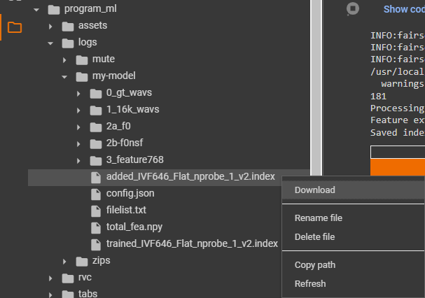
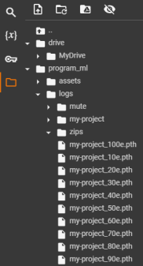
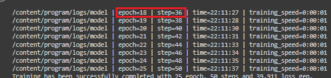
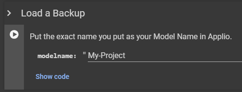
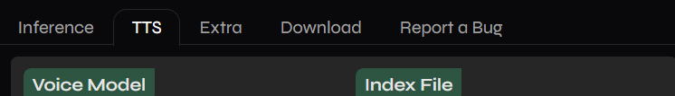
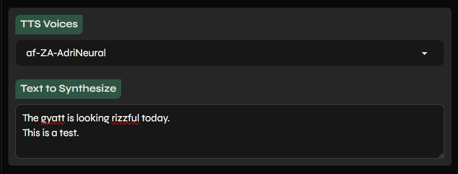
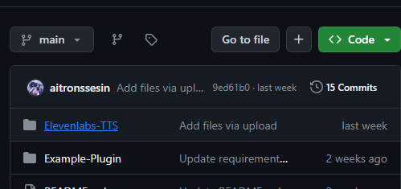
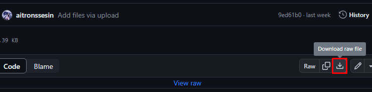
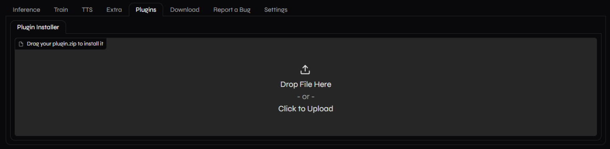

#
Applio Colab
Last update: August 7, 2025

#
Introduction
- This is a cloud-based alternative to run Applio, RVC Fork, only for people who don't have a good PC GPU, via the Google Colab Service. With a Web User Interface.
Google Colab Service
Check the Google Colab Glossary for more info on Free Tier, Limits, Verification, Pricing and other things.
#
Pros & Cons
The pros & cons are subjective to your necessities.
- Very complete
- Has an active development
- Currently stable
- Very fast
- TTS features
- Automatic model upload
- Has Mangio-Crepe
- User-friendly UI
- TensorBoard included
- Extra features: (plugins, model fusion, etc)
- Usage limit for free users
#
#
Setting Up
#
- Access the Colab space here. Then log in to your Google account.
#
Execute the Install Applio cell. This will take around 2 minutes.

It'll finish when you see a tick symbol on the left.

#
If you are going to train models, upload your dataset to your Google Drive storage & run the Extra cell.

To save time, unfold it & cancel the custom pretrain download, if you aren't going to use them.

#
- Grant the permissions to Google Drive.

#
- Select your sharing method then execute Start Applio.

Then open the public URL.

If you select ngrok put your ngrok token, which can be found here in the text box.
Don't close Colab until you're done using it, or it will stop working.
#
#
Inference
Be sure to read the Troubleshooting chapter if any issue arises.
#
#
1. Upload voice model.
Go to the Download tab.
You have two ways of uploading it: through its link or manually inputting its files.Link Go to the Download tab & paste the link in the
Model Linkbar.
It must be from Hugging Face or Google Drive.

Press
Download Model.
Manually Below in Drop files, press the upload box & input the model's .PTH.

Then input the .INDEX.
#
2. Select voice model.
Return to the Inference tab & click
Refreshon the right.
Select the model in the
Voice Model&Index Filedropdown.
#
#
3. Input vocals.
With Applio you can convert audios individually or in batches:
Single Press the upload box & input your audio.

Then select it in the dropdown below.

Batch Go to the Batch tab.

Go to the file explorer in Colab. Go to
drive, right-click the folder containing the audios & clickCopy Path.Paste the path in the
Input Folderbar.
In
Output Folderyou can define the path folder for the results.Ensure the paths don't contain spaces/special characters.
#
4. Modify settings. (optional)
Unfold
Advanced Settingsif you wish to modify the inference settings for better results.
#
#
5. Convert.
Click
Convertat the bottom to process the audio.Once it's done, you can hear the results in the Export Audio box below.
To download it, press the download symbol on its right.
#
#
#
Training
#
#
#
a. Model Name
#
Go to the
Traintab. Input a name for your model inModel Name.
Don't include spaces/special characters.
#
#
b. Dataset Path
#
Upload your dataset to your GD storage if you haven't already.
In Colab click the folder on the left ( ) & click the reload button.

(For mobile users: tap the three lines on the top left &Show file browser)
Open
drive, localize your dataset, right-click it & clickCopy path.

Then paste it on the
Dataset Pathbar.

#
#
c. Sampling Rate
#
Select your dataset's sample rate. If you don't know the amount, click here.

#
#
d. Preprocess Dataset
#
Ensure RVC Version is set as
V2& clickPreprocess Dataset.It'll finish when the output box says
preprocessed successfully.
#
#
a. Pitch extraction algorithm
#
Select the algorithm you want. Use either
CrepeorRMVPE, as the rest are outdated.
#
#
b. Hop Length (optional)
#
If you chose
Crepe, you can modify its hop length.
#
#
c. Extract Features
#
Press Extract Features.
It'll finish when it saysextracted successfully.
#
#
a. Batch Size
#
If you are a newbie, use
8. But in case your dataset is short (around 2 minutes or less), use4.
#
#
b. Save Every Epoch
#
Frequency of the saving checkpoints, based on the epochs.
If you are a newbie, simply leave it at
15.
E.g: with a value of
10, they will be saved after the epoch 10, 20, 30, etc.
#
#
c. Total Epoch
#
Input the total amount of epochs (training cycles) for the model.
But since we'll use TensorBoard, use an arbitrarily large value like
1000
#
#
d. Generate Index
#
- Click
Generate Index. This will create the model's .INDEX file.
#
#
e. Start Training
#
Tick Save Only Latest

Press
Start Trainingbelow to begin the training process.

#
#
f. Monitor training
#
TB will be available in the Colab. Remember to monitor it, as well as the cell's logs just in case.
The latter will show you errors if they happen, and information about the epochs & checkpoints.

If after around 2:30 hours of training you don't detect OT download the model of the lowest point, in case it's already OT, and the .INDEX.
Then once your GPU runtime resets, begin the retraining procedure.
While training, you might get disconnected if you:
- Stay AFK for a long time.
- Disconnect from your Internet.
- Don't solve the captchas that (might) pop up occasionally.
- Run out of GPU runtime.
#
#
a. Stop training
#
When you're very sure of overtraining, you can stop training by going to the Settings tab & press
Restart Applio.
Come back to the Colab & open the new public URL.
#
#
b. Get the INDEX
#
Open the file explorer, go to
logs, and open the folder named as the model.
Download the .INDEX named
added_.

#
#
c. Get the PTH
#
In said folder you'll also find all the checkpoints.
Select the one closest to before the overtraining point, and move it to the new folder.
The checkpoints will be organized with this format: ModelName_Epoch.pth
Example:arianagrande_60e.pth

You can determine the Step number of the checkpoints by looking at its epoch number on the logs.

And that's all, have fun with your model. To test it, do a normal inference as usual.
#
- In case the training finished but the model still needed training, you don't have to start from scratch.
Simply enter the same settings & criteria that you had previously inserted. You don't have to do preprocess, extract feature or train the .INDEX again.
You can change the save frequency or increase the Total Epoch amount, in case you didn't input enough before.
If you're resuming from a new session, unfold the Extra cell in Colab & input the model name you assigned before.

- For this, the Auto Backup cell must've ran in the previous session.

- Begin training again & remember to monitor [TB]https://docs.aihub.gg/rvc/resources/training/#tensorboard) as before.
#
#
#
TTS
+ with any RVC model
#
Applio is also known for having one TTS tool by default, with plenty of voices to choose for.
You can also use it with RVC models & apply the inference settings if you wish.
Additionally, you can download the Eleven Labs TTS plugin.
#
#
Instructions:
Go to the TTS tab.

#
If you want to use an RVC model, download it, go to TTS, click
Refresh& select it in Voice Model & Index File.
- To modify the inference settings or the output folder for the TTS/RVC audio, unfold
Advanced Settings.
#
In TTS Voices select the voice of your desired language, accent & gender.
In Text to Synthesize input your text. Then click
Convert.
- If you are using an RVC model, select a voice that matches the model the most, to guarantee great results.
#
Once it's done, you'll be able to hear the result in the Export Audio box. To download it, click the download button on its right ( ).

#
#
#
Extra
#
Applio has an Extra menu, containing an audio analyzer, F0 Curve and Model Information.
Making it convenient for determining the sample rate of datasets when training models.
It also contains the model fusion tool, ideal for advanced users.
#
#
Audio Analyzer:
Go to the Extra tab & press the upload box to input your audio.

#
- Once it's done uploading, click
Get information about the audio.
#
In Sampling rate you'll see the audio's full sample rate. Use said value for training.

#
WARNING:
If the frequencies don't reach the top of the spectrogram, see at which number peaks & multiply it by 2.
#
# Example:
Here it reached 20 kHz. Doubling it gives 40kHz. Therefore the ideal target sample rate would be
40k
#
#
#
Plugins
Plugins are components that you can add to Applio, that add new features & enhance your experience.
These are made by the public, and are free & easy to install.
You can find them on their GitHub page. More will be added in the future.
#
#
Installation:
Access their GitHub page & click on the name of the plugin you want.

#
Click on the ZIP file.

Click on the download button on the right. This will download the ZIP file of the plugin.

#
Open Applio & head over to the Plugins tab. Press the upload box & upload the ZIP.

#
Go to the Settings tab & click Restart Applio at the bottom. Go back to the Colab & open the new public URL.
Then you'll be able to see the plugin in the Plugins tab.

#
#
#
Troubleshooting
#
#
In case the public URL doesn't show up, there might be a problem with Gradio, you can check if it's down here.
To fix this, instead of waiting until Gradio is back online, just check the share_tunnel* checkbox on the Start Applio cell.

Applio will use localtunnel instead of the Gradio Public Share Link now, copy paste the Password IP (Don't worry, it's the Google PC's IP, not yours).
Then open the Share Link given by the colab and paste the "Password IP" in "Tunnel Password", finally click Submit.

#
If it's lower than 32k: select
32k.
If it's 44.1k: select
40k.
If i'ts higher than 48k: select
48k.
#
- This a phenomenon called artifacting. To fix it, read here.
#
- You have exhausted the GPU runtime of Colab.
#
- Report your issue here.